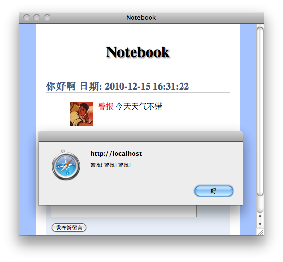

稍后我们会建立一个名字叫notebook_addon的服务，现在我们将入口改成查找服务notebook_addon
<?php
class notebook_ctl_default extends base_controller{
public function index(){
$this->pagedata['items'] = $this->app->model('item')->getList('*');
//新修改的部分开始
foreach(kernel::servicelist('notebook_addon') as $object){
foreach($this->pagedata['items'] as $k=>$item){
$this->pagedata['items'][$k]['addon'][] = $object->get_output($item);
}
}
//修改的部分结束
$this->display('default.html');
}
...
}
<?php
class notebook_gravatar{
function get_output($item){
return sprintf('<img style="float:left;margin-right:10px"
src="http://www.gravatar.com/avatar/%s?s=48&r=x" />',md5($item['item_email'])
);
}
}
<{foreach from=$items item=item}>
<dt>
<{$item.item_subject}>
<span class="date">日期: <{$item.item_posttime|cdate}></span>
</dt>
<dd>
<!-- 变化的区域开始 -->
<{foreach from=$item.addon item=block}>
<{$block}>
<{/foreach}>
<!-- 变化的区域结束 -->
<{$item.item_content}>
</dd>
<{/foreach}>
<services> <service id="notebook_addon"> <class>notebook_gravatar</class> </service> </services>
app/base/cmd update Updating base_application_service@notebook. Installing service notebook_addon Applications database and services is up-to-date, ok.
<app>
<name>日记本扩展</name>
<description>点一下就弹框...</description>
<author>
<name>somebody</name>
<email>somebody@example.com</email>
<url>http://www.example.com</url>
</author>
<depends>
<app>notebook</app>
</depends>
</app>
<services> <service id="notebook_addon"> <class>alertnote_tools</class> </service> </services>
<?php
class alertnote_tools{
function get_output($item){
return '<span style="color:red" onclick="alert(\'警报! 警报! 警报!\')">警报</span>';
}
}
app/base/cmd install alertnote Installing service notebook_addon Application alertnote installed... ok.
